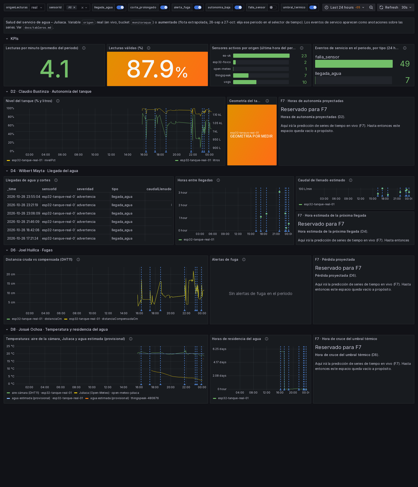
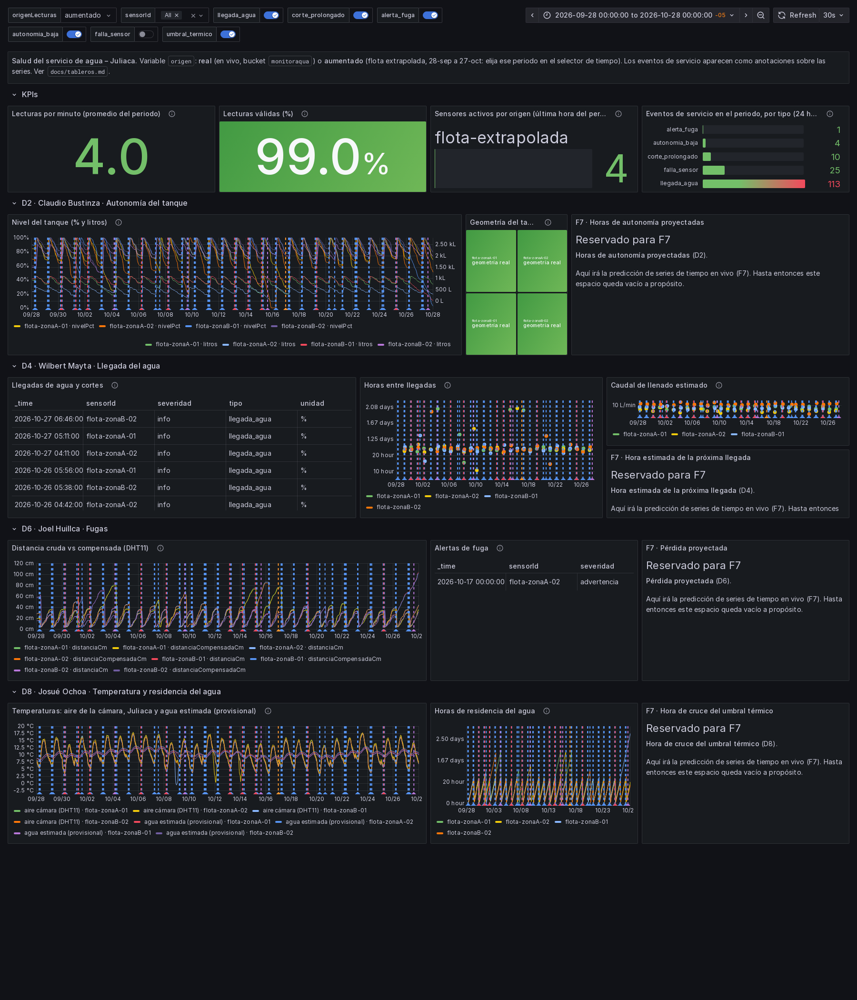
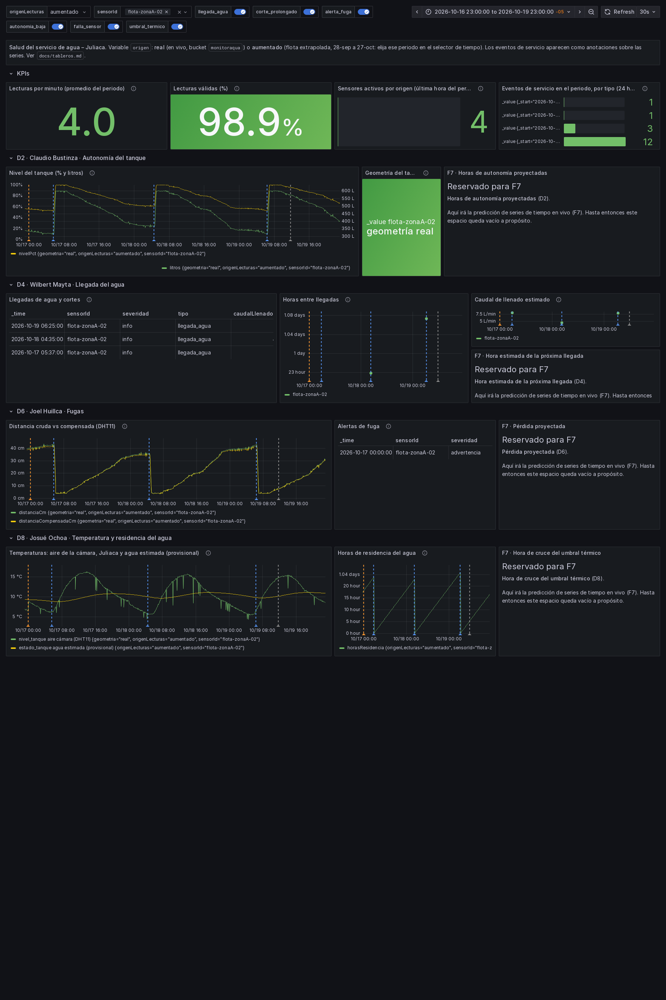
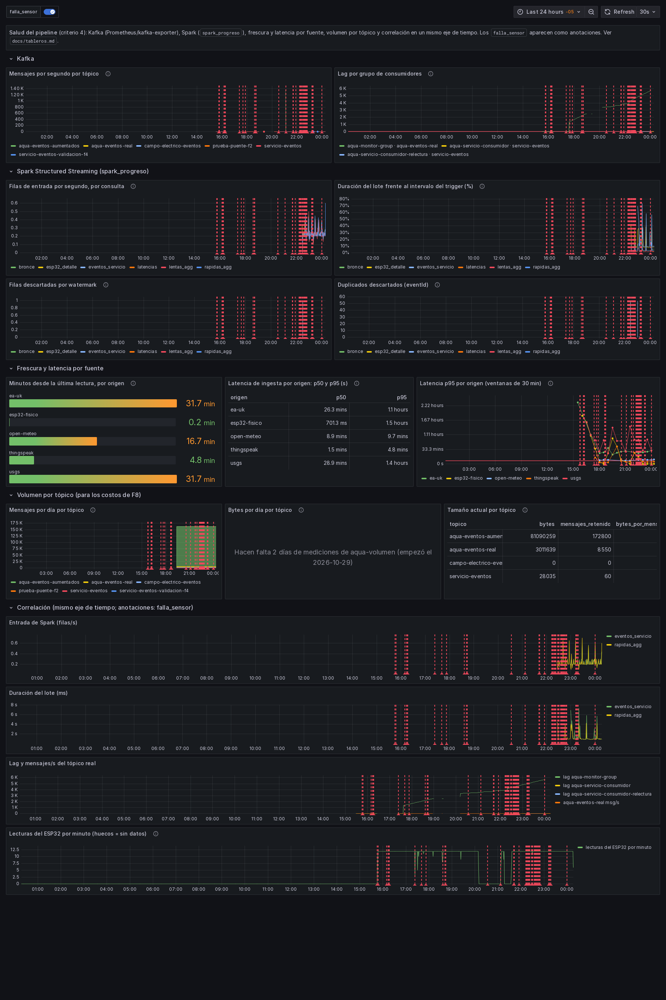
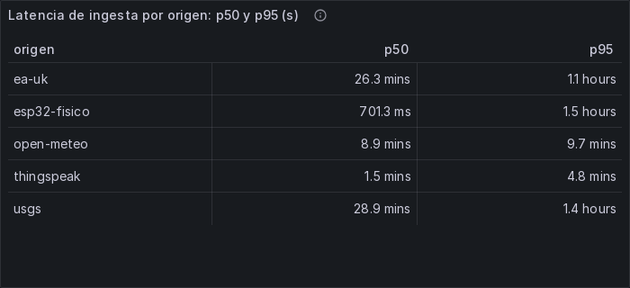
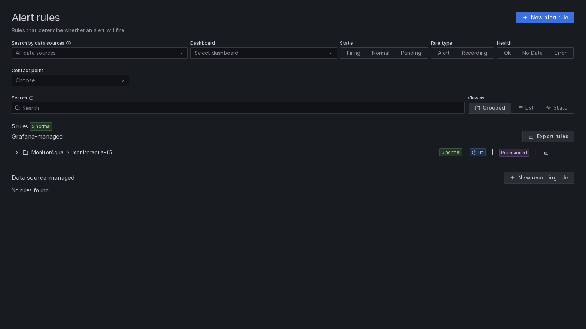

Tableros de Grafana y alertas (F5, con las predicciones de F7)¶
F7: los espacios reservados de cada fila ahora muestran las predicciones en vivo de los modelos de F6, y hay una
fila nueva de pronóstico vs real. Cómo llega cada predicción del modelo al tablero: docs/inferencia-en-vivo.md.
Cubre los criterios 6 (BI/ML distribuidas: tablero BI con KPIs del flujo en tiempo real, verificado en vivo) y 4 (observabilidad: panel operativo con métricas correlacionadas del pipeline).
- Todo por provisioning: los tableros son JSON versionado en
dashboards/, generado pordashboards/generar_tableros.py, y las alertas viven eninfra/grafana/provisioning/alerting/. No se editó nada a mano en la interfaz; para cambiar un panel se cambia el script y se vuelve a generar. - Acceso: Grafana en http://localhost:43000, carpeta MonitorAqua.
- Verificación de paneles:
infra/verificar_tableros.pyejecuta cada consulta por la API de Grafana. - Capturas: en
docs/evidencias/f5/, hechas con el renderizador oficial (lambda26-grafana-renderer).
Datos que alimentan los tableros¶
| Measurement / métrica | Origen | Qué guarda |
|---|---|---|
lecturas_agg |
Spark F3 (rapidas_agg, lentas_agg) |
ventanas por sensor y origen: n_total, n_validas, medias |
nivel_tanque (F5) |
Spark esp32_detalle, con Detector.nivel() congelado |
distancia cruda y compensada, nivel en % y litros, tag geometria (real o por_medir) |
estado_tanque (F5) |
foto del estado del detector de F4 en cada lote | temperatura del agua estimada (provisional), horas de residencia |
eventos_servicio |
sumidero de F4 | eventos con los numéricos de detalle aplanados (caudal, tasa, litros perdidos…) |
latencia_ingesta (F5) |
consulta Spark latencias (sin estado) |
latencia de ingesta por lectura y origen |
spark_progreso |
listener de Spark (F3) | filas, duración del lote, descartes por watermark y duplicados, por consulta |
predicciones (F7) |
Spark, consulta predicciones (streaming/inferencia.py) |
predicciones de D2, D4, D6 y D8 por tanque: tags dimension, version_modelo, tipo (estimacion, pronostico, verificacion, motivo) |
inferencia (F7) |
ídem, una por lote | latencia de la inferencia, lecturas, puntos escritos, recargas de modelos, errores |
kafka_volumen (F5) |
servicio aqua-volumen (cada 5 min) |
bytes en disco y mensajes por tópico |
kafka_* (Prometheus) |
kafka-exporter | offsets por tópico y partición, lag y miembros por grupo |
Buckets de InfluxDB:
monitoraqua: lo real, en vivo, con retención de 30 días.monitoraqua_aumentados: la flota extrapolada (corridar2026-45facae2, 28-sep a 27-oct) sin vencimiento. Tiene sus propias fechas simuladas, que la retención de 30 días rechazaría.
streaming/cargar_historico_influx.py carga el historial real (bronce) y los datos aumentados. Es idempotente:
reescribir un punto con la misma serie y tiempo lo reemplaza. Lo que llega en vivo lo escribe Spark con las mismas
funciones (streaming/tablero.py).
Las reglas congeladas de F4 (reglas_servicio.yml, detector_servicio.py) no se tocaron. F5 usa
Detector.nivel() y lee el estado que el detector ya mantenía.
A. "Salud del servicio de agua – Juliaca" (uid monitoraqua-bi), criterio 6¶
Variables:
origenLecturas:realpor defecto, bucketmonitoraqua; uaumentado, bucketmonitoraqua_aumentados. Conaumentadohay que elegir el periodo 2026-09-28 a 2026-10-28.sensorId: varios valores o All.
Anotaciones: los eventos de servicio, uno por tipo y cada uno con su interruptor. falla_sensor viene apagada en
este tablero porque son muchas; se activa a mano.
| Fila | Panel | Qué responde |
|---|---|---|
| KPIs | Lecturas por minuto | volumen del flujo: todas las lecturas del periodo / minutos (ventanas de 1 min alineadas al minuto y de 15 min) |
| KPIs | Lecturas válidas (%) | calidad: n_validas / n_total según la regla de F3 |
| KPIs | Sensores activos por origen | cobertura: sensores con datos en las 2 h finales del periodo (2 h porque EA y USGS llegan con 25-54 min de atraso) |
| KPIs | Eventos de servicio por tipo | qué está pasando en el servicio en el periodo (24 h por defecto) |
| D2 | Nivel del tanque (% y litros) | ¿cuánta agua hay? |
| D2 | Geometría del tanque | aviso "GEOMETRÍA POR MEDIR" mientras tanques.yml tenga por_medir: true: % y litros son aproximados |
| D2 | F7 · Horas de autonomía (perfil de consumo) | autonomía P50 hasta 12 h ("más de 12 h"), banda calibrada, consumo medio como comparación, advertencia en ThingSpeak; o el motivo si no aplica |
| D4 | Llegadas de agua y cortes | línea de tiempo de llegada_agua y corte_prolongado |
| D4 | Horas entre llegadas | intervalo entre llegadas del mismo tanque |
| D4 | Caudal de llenado estimado | L/min = subida × capacidad / Δt (adecuación de D4) |
| D4 | F7 · Próxima llegada del agua | horas a la llegada más probable, ventana P10-P90 calibrada, probabilidad a 6/12/24 h; o el motivo |
| D6 | Distancia cruda vs compensada | cuánto corrige la compensación con el DHT11 (±0.18 cm a 50 cm) |
| D6 | Alertas de fuga | alerta_fuga con descenso, tasa, tasa habitual y litros perdidos |
| D6 | F7 · Pérdida proyectada por fuga (última noche) | tasa, exceso, P(fuga) y pérdida a 24 h con banda (complemento de alerta_fuga); o el motivo |
| D8 | Temperaturas | aire de la cámara (DHT11), Juliaca (Open-Meteo, solo con real) y agua estimada (provisional, τ = 25.2 h) |
| D8 | Horas de residencia del agua | horas desde el último llenado detectado |
| D8 | F7 · Agua estimada, cruce del umbral y residencia | agua ahora y a 6/12 h con banda, P(cruzar 4 °C / 25 °C en 12 h), residencia (edad del agua) |
| F7 · Pronóstico vs real | D2 · Nivel a 60 min: real vs pronosticado · D2 · Error del nivel · D4 · Error de la hora de llegada · D6 · Pérdida pronosticada vs observada · D8 · Agua real vs pronosticada | el error en vivo de las predicciones pasadas (puntos verificacion, en el instante objetivo) |
B. "Salud del pipeline" (uid monitoraqua-pipeline), criterio 4¶
Anotaciones: falla_sensor, del bucket real.
| Fila | Panel | Qué responde |
|---|---|---|
| Kafka | Mensajes por segundo por tópico | carga de entrada de cada tópico |
| Kafka | Lag por grupo de consumidores | ¿algún consumidor se atrasa? Línea roja en 10 |
| Spark | Filas de entrada por segundo, por consulta | carga de cada consulta |
| Spark | Duración del lote frente al trigger (%) | ¿alguna consulta no alcanza? Línea roja en 100 % |
| Spark | Filas descartadas por watermark | lecturas que llegaron más tarde que el watermark |
| Spark | Duplicados descartados | dropDuplicatesWithinWatermark(eventId) en acción |
| Frescura | Minutos desde la última lectura, por origen | ¿qué fuente dejó de llegar? Incluye el atraso propio de cada fuente |
| Frescura | Latencia p50 y p95 por origen (tabla) | cuánto tarda cada fuente en llegar a Kafka |
| Frescura | Latencia p95 por origen (30 min) | evolución; línea roja = watermark de las rápidas (420 s) |
| Volumen | Mensajes por día por tópico | base de los costos de F8 |
| Volumen | Bytes por día por tópico | ídem; hacen falta 2 días de mediciones de aqua-volumen (empezó el 2026-10-29) |
| Volumen | Tamaño actual por tópico | bytes, mensajes retenidos y bytes por mensaje |
| Correlación | Entrada de Spark · Duración del lote · Lag y mensajes/s · Lecturas del ESP32 por minuto | los cuatro sobre el mismo eje de tiempo, con el cursor compartido |
| Inferencia en vivo (F7) | Latencia de la inferencia por lote (ms) · Predicciones escritas por lote | cuánto tardan los modelos en cada micro-lote (línea roja = trigger de 30 s) y cuántas predicciones y recargas de modelos hubo |
Lo que muestra la correlación con los datos del 28-oct:
- Hueco del ESP32 (~19:50 a 20:10): las lecturas por minuto bajan a cero, y la lectura se retoma sin pérdida.
- Grupos abandonados: el lag de
aqua-monitor-groupcrecía sin consumidor hasta que se borró el grupo. - Latencia del ESP32 en 24 h: el p95 es de 1.5 h, muy por encima del watermark, por la puesta al día tras la suspensión de la PC de esa noche. En la ventana de 30 min de la alerta ya es normal.
Grupos de consumidores: con aprobación del equipo se borraron dos grupos abandonados, sin miembros activos:
aqua-monitor-group, de la S09: tenía lag creciente. Si se vuelve a levantarlambda26-aqua-consumer, el grupo reaparece.aqua-servicio-consumidor-relectura, la relectura de F4.
Queda aqua-servicio-consumidor.
No volver a encender el contenedor de la S09
lambda26-aqua-consumer (consumidor de la S09, en el repo del curso) no debe volver a encenderse: al
arrancar recrea el grupo aqua-monitor-group, que vuelve a acumular lag sin que nadie lo use y dispara un
falso problema en el panel de lag. El consumidor vigente es lambda26-aqua-consumidor-eventos, grupo
aqua-servicio-consumidor.
C. Alertas (Grafana Alerting, infra/grafana/provisioning/alerting/reglas_monitoraqua.yml)¶
Grupo monitoraqua-f5, carpeta MonitorAqua, evaluado cada 1 min. Sin contact point configurado: el estado se ve en
Grafana → Alerting.
| Regla | Condición | Umbral y justificación | Sin datos |
|---|---|---|---|
| ESP32 sin datos por más de 5 min | lecturas del ESP32 en 5 min < 1 | el ESP32 publica cada 5 s: se esperan 60 lecturas en 5 min. Cero significa sensor, Wi-Fi, Firebase o puente caídos, o la PC suspendida | alerta |
| Lag del consumidor de servicio-eventos > 10 | sum(kafka_consumergroup_lag{consumergroup="aqua-servicio-consumidor"}) > 10 durante 5 min |
servicio-eventos recibe pocos eventos por hora y el consumidor los lee al instante; 10 acumulados durante 5 min es un consumidor caído o atascado |
alerta (el grupo desapareció) |
| Lote de Spark más largo que su trigger | máx. en 10 min de batchDurationMs / trigger > 100 %, por consulta, durante 5 min |
si un lote dura más que su trigger, la consulta se atrasa lote tras lote. Hoy el máximo observado es ~75 % (eventos_servicio, trigger 10 s) |
alerta (Spark sin progreso) |
| Latencia p95 de una fuente rápida > 420 s | p95 en 30 min de latencia_ingesta, por origen (ESP32, ThingSpeak) |
420 s = watermark de las fuentes rápidas (7 min). Por encima, parte de esa fuente se descarta por tardía | OK |
| Falla de sensor activa | lecturas inválidas del ESP32 en 5 min / total > 0.5 durante 2 min | mismo síntoma que el evento falla_sensor de F4, medido en vivo. Si no llega nada, ya salta "ESP32 sin datos" |
OK |
| La consulta de predicciones dejó de escribir (F7) | puntos de predicción en 30 min < 1, durante 5 min | ThingSpeak llega cada ~5 min y cada lote con tanques escribe predicciones o motivos: 30 min sin nada es la consulta caída o atascada | alerta |
Estado verificado el 2026-10-29: las 5 reglas con salud ok y en Normal. Las multidimensionales evalúan cada
consulta (6) y cada fuente rápida (2) por separado. Detalle en docs/evidencias/f5/alertas_estado.json.
D. Verificación¶
infra/verificar_tableros.py ejecuta cada consulta de cada panel y anotación con la API de Grafana (mismas macros y
datasource que el tablero). Resultado del 2026-10-29 (docs/evidencias/f5/verificacion_paneles.json):
| Escenario | Con datos | Sin datos | Por qué sin datos |
|---|---|---|---|
| BI · real · 24 h | 16 | 5 | en 24 h no hubo alerta_fuga, corte_prolongado, autonomia_baja ni umbral_termico (tabla de fugas y 4 anotaciones). El panel muestra "Sin alertas de fuga en el periodo" |
| BI · aumentado · 28-sep a 28-oct | 19 | 2 | Open-Meteo no existe para la flota extrapolada; ningún umbral_termico (igual que en la validación de F4) |
| Pipeline · 24 h | 18 | 1 | bytes por día: hacen falta 2 días de mediciones; el panel lo dice |
En el tablero BI con aumentado, los conteos de eventos (113 llegada_agua, 25 falla_sensor, 10
corte_prolongado, 4 autonomia_baja, 1 alerta_fuga) coinciden con la validación de consistencia de F4 (f4.3).
Capturas (docs/evidencias/f5/):
| Archivo | Qué muestra |
|---|---|
bi_real_24h.png |
BI con origen = real, últimas 24 h |
bi_aumentado_30d.png |
BI con origen = aumentado, 28-sep a 28-oct |
bi_aumentado_fuga_zonaA02.png |
BI aumentado, 3 días de flota-zonaA-02 |
pipeline_24h.png |
pipeline, últimas 24 h |
pipeline_latencia.png |
tabla de latencias p50 y p95 por origen |
alertas.png |
lista de reglas: 5, provisionadas, todas en Normal |

Tablero BI "Salud del servicio de agua – Juliaca" con datos reales, últimas 24 h.

El mismo tablero con la flota extrapolada (origen = aumentado), 28-sep a 28-oct.

Tres días de flota-zonaA-02 con la flota extrapolada.

Tablero "Salud del pipeline", últimas 24 h.

Latencias de ingesta p50 y p95 por origen.

Reglas de alerta en F5 (eran 5; F7 agregó la sexta). Evidencia completa: F5.
# Regenerar tableros (y Grafana los recarga solo en ~10 s)
.venv/Scripts/python dashboards/generar_tableros.py
# Cargar historial real y datos aumentados en InfluxDB
.venv/Scripts/python streaming/cargar_historico_influx.py
# Verificar que cada panel devuelve datos
.venv/Scripts/python infra/verificar_tableros.py --json docs/evidencias/f5/verificacion_paneles.json
# Recargar las alertas tras cambiar el YAML
curl -u admin:<clave> -X POST http://localhost:43000/api/admin/provisioning/alerting/reload
# Captura de un tablero
curl -u admin:<clave> -o captura.png "http://localhost:43000/render/d/monitoraqua-bi?orgId=1&from=now-24h&to=now&width=1800&height=2100&kiosk"
Pendientes¶
- Geometría del ESP32: con las medidas reales, el aviso "GEOMETRÍA POR MEDIR" pasa a "geometría real" sin tocar el tablero.
- Verificación de D8 contra el agua real (3418755) y de D4 con una llegada real: pendientes de revisar el 31-oct
(
docs/inferencia-en-vivo.md,infra/evidencia_f7_pendiente.py). - Bytes por día: se completa solo desde el 2026-10-30.
- Contact point: las alertas no notifican a nadie (correo, Telegram); se ven en Grafana. Se define en F8 si hace falta.